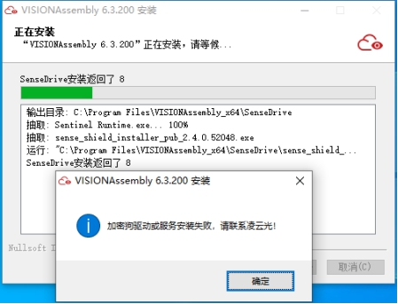

| Nhà sản xuất | Sản phẩm tương thích | USB tạm thời (giới hạn thời gian) | USB vĩnh viễn (sản phẩm) | Tên trình điều khiển |
|---|---|---|---|---|
| Sense | Chỉ hỗ trợ phiên bản VISIONAssembly 6.3.200 trở lên | |
sense_shield_installer_pub_XXXX.exe |
Danh sách số hiệu và quyền hạn của USB bảo mật
| Số hiệu | Tên quyền hạn |
|---|---|
| 1-7 | Chức năng cơ bản bao gồm tìm kiếm, định vị, phát hiện, đo lường 2D, hiệu chuẩn, đọc mã, v.v. |
| 17-18 | Chức năng 3D |
| 19 | Học sâu (Deep Learning) |
| 20 | OCR |
| 100 | Quyền truy cập sản phẩm VisionAssembly |
| 101 | Quyền truy cập sản phẩm VisionLASER |
| 188 | Cấp phép liên kết mã hóa dự án và công trình |
Bước 1: Vào thư mục cài đặt VA, nhấp đúp để mở “加密狗查看工具.exe” (Công cụ kiểm tra USB bảo mật) – dùng để xem SN, phiên bản firmware, quyền hạn, thời hạn sử dụng, mã lỗi, v.v.
Bước 2: Nhấn vào khu vực chức năng bên trái “硬件锁” (Khóa phần cứng), “本地加密锁” (Khóa mã hóa cục bộ) sẽ hiển thị SN của USB bảo mật đang kết nối (SN này có thể gửi cho quản trị viên để nâng cấp từ xa).
Bước 3: Chọn USB bảo mật cần kiểm tra, thông tin chi tiết sẽ hiển thị bên phải.
Phiên bản firmware: cung cấp cho bộ phận R&D để hỗ trợ xử lý sự cố.
Tổng quan về trạng thái cấp phép: có thể xem toàn bộ giấy phép, giấy phép hợp lệ, giấy phép đã hết hạn.

Bước 4: Nhấp vào khu vực chức năng bên trái “我的软件” (Phần mềm của tôi), sau đó nhấn vào góc trên bên phải  để xem chi tiết tình trạng cấp phép, như hình dưới,
để xem chi tiết tình trạng cấp phép, như hình dưới,

17-3D: Biểu thị mô-đun được cấp phép mang mã quyền 17, mô tả chức năng là “Hỗ trợ chức năng 3D”
: Đã hết hạn
 : Còn hiệu lực
: Còn hiệu lực
Chi tiết: Có thể xem trạng thái cấp phép, thời gian bắt đầu/kết thúc, thời điểm sử dụng lần đầu, thời hạn hiệu lực, số lần sử dụng còn lại, v.v., như hình minh họa bên dưới,
Bạn cũng có thể truy cập mục “高级” (Nâng cao) ở góc dưới bên trái để tra mã lỗi. Danh sách mã lỗi chi tiết xem tại 2.1-3）Danh sách lỗi của USB bảo mật.

Bước 1: Theo hướng dẫn tại 2.1-1）Công cụ kiểm tra USB bảo mật, tra cứu số SN của USB bảo mật rồi gửi cho quản trị viên
Bước 2: Nhận tệp nâng cấp d2c do quản trị viên cung cấp, sao chép vào máy tính có cắm USB bảo mật cần nâng cấp
Bước 3: Nhấn đúp vào tệp d2c, cửa sổ sau sẽ hiện ra. Nếu xuất hiện thông báo “数据包升级成功！” (Gói dữ liệu nâng cấp thành công!) thì nghĩa là đã nâng cấp thành công. Nhấn “关闭” (Đóng) để thoát
| 错误码 | 描述 | |
|---|---|---|
| 0x00000000 | 0 | 成功 |
| 0x00000002 | 2 | 输入参数错误 |
| 0x00000003 | 3 | 内存空间不足 |
| 0x00000004 | 4 | 缓冲区大小不足 |
| 0x00000008 | 8 | 无效的句柄 |
| 0x00000009 | 9 | 操作超时 |
| 0x00000010 | 16 | 不支持的操作，可能是版本过低 |
| 0x00000040 | 64 | 网络错误 |
| 0x00000044 | 68 | 当前控制锁不支持PIN码功能，请向销售或技术服务人员申请更换控制锁 |
| 0x00000045 | 69 | 开发锁仍然使用初始 PIN码，请修改初始 PIN 码 |
| 0x00000047 | 71 | 开发锁或 API 版本太低，需要更换开发锁或升级 SDK |
| 0x00000048 | 72 | 输入的 PIN 码错误 |
| 0x00000049 | 73 | PIN 码被锁定，请联系技术服务人员解决 |
| 0x01000071 | 16777329 | 许可升级包损坏 |
| 0x01000072 | 16777330 | 许可升级包版本过低 |
| 0x02000002 | 33554434 | IPC 收发错误 |
| 0x02000003 | 33554435 | 连接失败，指连接软件链接 Virbox 许可服务失败（本地服务） |
| 0x05000004 | 83886084 | 找不到服务器 |
| 0x05000006 | 83886086 | 登录的许可句柄数量已达到上线（上线为128） |
| 0x0500000D | 83886093 | 系统操作失败 |
| 0x05000013 | 83886099 | 白名单触发 |
| 0x05000014 | 83886100 | 黑名单触发 |
| 0x0500001F | 83886111 | 没有找到加密锁，请确保加密锁正常插入 |
| 0x13000001 | 318767105 | 开发商证书已存在加密锁中。若许可可以正常下载到加密锁中，此错误可忽略 |
| 0x13000003 | 318767107 | 解析用户锁的设备证书失败 |
| 0x13000005 | 318767109 | 错误的数据相应 |
| 0x13000007 | 318767111 | 未调用 Runtime 初始化函数，请先调用 slm_init 初始化函数，再调用此接口 |
| 0x13000009 | 318767113 | Runtime 库版本不匹配，请升级 SDK 开发库 |
| 0x13000020 | 318767136 | 许可未找到，请确保指定的许可可以被访问到（本地硬件锁许可，网络硬件锁许可，云许可，软许可） |
| 0x13000021 | 318767137 | 认证错误。请联系 技术服务人员 解决 |
| 0x13000022 | 318767138 | 认证错误。请联系 技术服务人员 解决 |
| 0x13000024 | 318767140 | 用户数据区太小 |
| 0x13000025 | 318767141 | 无效的 LM 请求 |
| 0x13000027 | 318767143 | 错误的 D2C 升级包 |
| 0x13000028 | 318767144 | 访问云许可或云平台时返回的数据错误 |
| 0x13000029 | 318767145 | 读写的数据过大 |
| 0x13000030 | 318767152 | 没有登录的用户 |
| 0x13000037 | 318767159 | 许可模块不存在，用此错误码判断当前功能模块是否支持 |
| 0x13000038 | 318767160 | 错误的开发商 API 密码 |
| 0x1300003A | 318767162 | 账号登录会话时效，请重新登录用户账号 |
| 0x13000051 | 318767185 | 许可需要联网激活 |
| 0x24000008 | 603979784 | 发现软件被调试 |
| 0x2400000D | 603979789 | 无效的 Session（当前许可的会话失效，可能许可登录已经退出或被强行踢出） |
| 0x2400000E | 603979790 | Session 已被删除（当前许可的会话失效，可能许可登录已经退出或被强行踢出） |
| 0x2400000F | 603979791 | 许可已经过期（许可在访问过程中过期） |
| 0x24000010 | 603979792 | Session 超时（访问加密锁的会话超时了） |
| 0x24000015 | 603979797 | 许可不允许远程登录（当前许可是本地许可，却被远程机器访问了） |
| 0x22000001 | 570425345 | 文件名称无效，可能指定的文件名称在锁内并不存在 |
| 0x22000006 | 570425350 | 锁内创建文件长度出错，可能是我们在锁内创建的文件太大，超出了锁内剩余空间大小 |
| 0x22000007 | 570425351 | 锁内文件写数据出错，可能是没有写入权限 |
| 0x22000008 | 570425352 | 许可信息数据错误。可能是许可访问数据被篡改。请联系 技术服务人员 解决 |
| 0x22000009 | 570425353 | 许可信息数据错误。可能是许可访问数据被篡改。请联系 技术服务人员 解决 |
| 0x2200000B | 570425355 | 在更新或删除锁内某条许可的时候，锁内并没有找到对应的许可 |
| 0x2200000D | 570425357 | 当前许可号不能被操作，可能是操作了 0号许可 |
| 0x2200000E | 570425358 | 所有许可被禁用（0号许可被禁用） |
| 0x2200000F | 570425359 | 当前许可被禁用。升级了许可禁用升级包造成的，也称之为许可吊销 |
| 0x22000011 | 570425361 | 许可尚不可用，一般是指许可没有达到可使用的时间（对于设置了起始时间的许可可能会返回此错误） |
| 0x22000012 | 570425362 | 许可已经到期（许可已经超过设定的结束时间，或时间跨度已经用尽） |
| 0x22000014 | 570425364 | 许可登录次数用尽 |
| 0x22000015 | 570425365 | 许可已达到最大并发数（网络授权的并发数达到最大值，新的登录将失败） |
| 0x22000017 | 570425367 | 锁内已经达到最大会话数量 |
| 0x2200001A | 570425370 | 没有足够的共享内存。锁内共享内存大小为 256byte，可能是操作的数据过大 |
| 0x2200001C | 570425372 | 错误的数据文件长度 |
| 0x2200001E | 570425374 | 找不到对应的许可数据文件。可能是许可并没有设置数据区，但是我们却准备操作数据区 |
| 0x2200001F | 570425375 | 远程升级包类型错误 |
| 0x22000020 | 570425376 | 时间戳错误的远程升级包（D2C 升级包） |
| 0x22000021 | 570425377 | 序列号错误的远程升级包（D2C 升级包） |
| 0x22000022 | 570425378 | 添加的许可已经存在，若要覆盖已有许可，请在签发许可的时候选择“强制添加” |
| 0x22000023 | 570425379 | 许可数量受限 |
| 0x22000024 | 570425380 | 无效的许可数据文件偏移 |
| 0x2200002C | 570425388 | 许可会话已退出登录 |
| 0x22000031 | 570425393 | 设置的用户数据区类型字段错误 |
| 0x22000032 | 570425394 | 设置的用户数据区长度过大 |
| 0x22000034 | 570425396 | 所有许可时间到期（0号许可已经到期） |
| 0x22000038 | 570425400 | 远程升级失败。许可升级错误，若多次尝试依旧失败，请联系 技术服务人员 解决 |
| 0x2200003C | 570425404 | 加密数据长度不对齐 |
| 0x2200003D | 570425405 | 加密数据错误 |
| 0x2200003E | 570425406 | 不支持短码升级 |
| 0x22000040 | 570425408 | 用户数据区不存在（当前许可并没有设置数据区） |
| 0x22000050 | 570425424 | 找不到文件，可能指定的文件名称在锁内并不存在 |
| 0x22000059 | 570425433 | 无效的开发商ID，可能是加密锁异常了，请联系 技术服务人员 解决 |
| 0x2200005D | 570425437 | 升级包许可数量过大 |
| 0x2200005F | 570425439 | 用户锁被锁定（您可能有些操作锁定了加密锁，无法解锁，请联系软件供应商解决） |
| 0x22000062 | 570425442 | 无效的短码升级交互文件 |
| 0x22000063 | 570425443 | 短码升级用户数据区错误 |
| 0x22000064 | 570425444 | 错误的开发锁签名版本，需要更换为新的用户锁，请联系软件供应商或者 技术服务人员 解决 |
| 0x22000065 | 570425445 | 错误的开发锁签名数据，需使用新的开发锁签包，请联系 技术服务人员 解决 |
Để thuận tiện hơn trong việc xác định lỗi khóa bảo vệ, người dùng cần tìm và gửi lại nhật ký của khóa theo cách sau: Hãy gửi thư mục log và tệp install.log trong đường dẫn C:\Program Files (x86)\senseshield\ss

Nếu có thông báo log đang bị chiếm dụng và không thể nén trực tiếp, hãy sao chép thư mục log sang vị trí khác rồi nén và gửi lại.
Bước 1: Truy cập vào thư mục cài đặt VA, mở “加密狗修复工具.exe” với quyền quản trị viên
Bước 2: Tắt phần mềm diệt virus, phần mềm bảo vệ hệ thống,... Nhấn “Một nút kiểm tra & sửa lỗi”, có thể kiểm tra được các lỗi phổ biến sau

Bước 3: Nếu kết quả kiểm tra như hình dưới thì nghĩa là không có các lỗi dạng này, cần liên hệ bộ phận R&D

Thông thường, khi cài đặt phần mềm VA, trình điều khiển của khóa bảo vệ sẽ được cài đặt tự động (nếu phiên bản trình điều khiển giống nhau sẽ không cài lại), lúc này là chế độ cài đặt ẩn, người dùng sẽ không thấy và cũng không có biểu tượng ở khay hệ thống (góc dưới bên phải màn hình )。
Nếu khách hàng muốn hiển thị biểu tượng khay hệ thống, hoặc muốn ẩn lại sau khi đã hiển thị, có thể chỉnh sửa tập tin cấu hình để điều chỉnh.
S1: Mở tập tin C:\ProgramData\senseshield\ss\config.ini
S2: Tìm đến mục như hình dưới, chỉnh giá trị theo nhu cầu (1: Ẩn, 0: Hiển thị)

Hiện tượng: Khi mở phần mềm, xuất hiện thông báo lỗi: “Chưa cắm khóa bảo vệ hoặc quyền khóa không đủ, nhấn OK để thoát phần mềm.”
Nguyên nhân và cách xử lý:
Chưa cắm khóa bảo vệ: Cắm khóa vào để giải quyết
Quyền khóa không đủ: Dùng 2.1-1）Công cụ kiểm tra khóa bảo vệ để kiểm tra quyền, nếu thiếu quyền, dùng 2.1-2）Cập nhật khóa từ xa để cập nhật
Chưa cài trình điều khiển khóa phiên bản mới: Dùng 2.1-5）Công cụ sửa lỗi khóa bảo vệ để kiểm tra trình điều khiển có hoạt động bình thường hay không
Hiện tượng: Trong quá trình sử dụng phần mềm, bất ngờ xuất hiện lỗi như sau:

Nguyên nhân và cách xử lý:
Khóa bảo vệ bị ngắt kết nối: Kiểm tra tình trạng kết nối của khóa hoặc dùng 2.1-5）Công cụ sửa lỗi khóa bảo vệ để kiểm tra và sửa lỗi
Một quyền nào đó trên khóa đã hết hạn: Dùng 2.1-1）Công cụ kiểm tra khóa bảo vệ để kiểm tra quyền, nếu đã hết hạn, dùng 2.1-2）Cập nhật khóa từ xa để cập nhật
Hiện tượng: Khi mở phần mềm hoặc đang sử dụng, báo lỗi: “Thời gian sử dụng còn lại: X ngày”
Nguyên nhân và cách xử lý: Phần mềm sẽ nhắc trước khi hết hạn, khi còn dưới 10 ngày sẽ nhắc lúc mở phần mềm, trong quá trình sử dụng bình thường sẽ không nhắc lại cho đến khi sắp hết hạn. Dùng 2.1-2）Cập nhật khóa từ xa để cập nhật
Hiện tượng: Khi cài đặt bộ cài VA, bước cuối cùng sẽ tiến hành cài trình điều khiển khóa bảo vệ (chế độ ẩn). Nếu gặp lỗi khi cài, sẽ hiện thông báo và hủy quá trình cài đặt.
(1) Giá trị trả về: 4：

(2) Giá trị trả về: 5：

(3) Giá trị trả về: 6：

(4) Giá trị trả về: 7：

(5) Giá trị trả về: 8：

(6) Giá trị trả về: 50：

(7) Giá trị trả về: 55：

Nguyên nhân và cách xử lý:
(1) Giá trị trả về: 4: Đã có tiến trình cài đặt khóa bảo vệ đang chạy, hãy kết thúc thủ công hoặc khởi động lại máy rồi cài lại phần mềm!
Do nguyên nhân không rõ, quá trình cài đặt trình điều khiển khóa chưa kết thúc bình thường, hãy kết thúc thủ công tiến trình hoặc khởi động lại rồi thử cài lại.
(2) Giá trị trả về: 5: Thiếu tập tin cài đặt trình điều khiển, hãy tắt phần mềm bảo vệ hệ thống, rồi cài lại phần mềm!
Trình điều khiển có thể bị chặn bởi các phần mềm như 360, Tencent PC Manager, 2345, các phần mềm bảo vệ hệ thống khác,... Hãy tắt chúng rồi thử cài lại phần mềm.
(3) Giá trị trả về: 6: Cài đặt trình điều khiển thất bại, hãy tắt phần mềm bảo vệ rồi thử lại!
Nguyên nhân tương tự (2), cần tắt các phần mềm bảo vệ rồi cài lại.
(4) Giá trị trả về: 7\8\50\55: Lỗi cài đặt trình điều khiển hoặc dịch vụ liên quan, vui lòng liên hệ Lingyun!
Hãy thử dùng 2.1-5）Công cụ sửa lỗi khóa bảo vệ để kiểm tra và sửa lỗi, sau đó thử cài lại. Nếu vẫn không được, hãy liên hệ R&D.